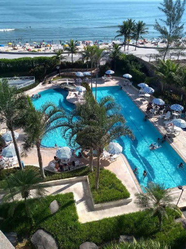
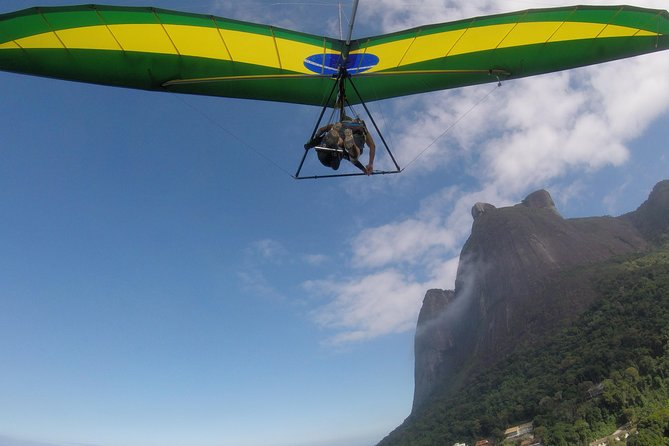

Vuelo: Buenos Aires - Río de Janeiro

Hotel Praia do Pontal
Hotel 4 estrellas situado en la playa Ipanema de Río de Janeiro, ofrece una pileta al aire libre. Entre sus instalaciones cuenta con bar, parque acuático
y estacionamiento privado gratuito. El parque nacional de la Tijuca está a 23 km.
Actividades:
Vuelo en ala delta o parapente
Descripción general
Vuele sobre Río de Janeiro en este tour de ala delta o parapente. No es necesario experiencia. Reciba una breve sesión
de entrenamiento antes de salir de la rampa Pedra Bonita, ubicada dentro del Parque Nacional Tijuca. Disfruta de una
perspectiva única de la ciudad antes de aterrizar en la playa de Ipanema. La duración del vuelo depende de las
condiciones climáticas.
Excursión a la montaña del Pan de Azúcar

Descripción general
Suba a las montañas de Corcovado y Pan de Azúcar en la mañana temprano para evitar aglomeraciones en esta excursión
de 5 horas en Río de Janeiro.